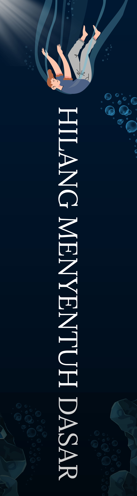
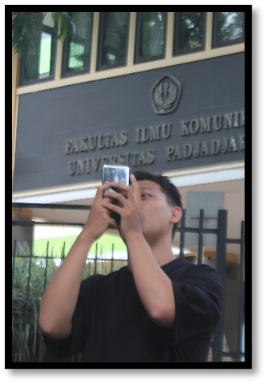

SEBUAH NOVEL
Hilang
Menyentuh
Dasar
“Semakin dalam aku tenggelam, semakin jelas aku mengenali siapa diriku.”

SEBUAH NOVEL
“Semakin dalam aku tenggelam, semakin jelas aku mengenali siapa diriku.”
“Hilang Menyentuh Dasar” menceritakan perjalanan Arka, seorang remaja yang tumbuh di antara luka yang tak pernah benar-benar diberi nama. Sejak kecil, ia hidup dalam ruang yang terasa asing — rumah yang tidak sepenuhnya menjadi tempat pulang, keluarga yang hadir namun tak selalu terasa dekat, dan masa lalu yang perlahan membentuk ketakutan dalam diam. Beranjak remaja, Arka mulai mengalami hal-hal yang tak ia mengerti: pingsan tanpa sebab, kecemasan yang datang tiba-tiba, hingga perasaan terlepas dari dirinya sendiri. Ia mencoba bertahan dengan caranya — menyimpan semuanya sendiri, berpura-pura baik-baik saja, dan mencari arti “normal” di tengah kekacauan pikirannya. Di luar itu, ia tetap menjalani hidup seperti biasa: berteman, jatuh cinta, bermimpi, dan mengejar masa depan. Namun setiap langkahnya selalu dibayangi oleh masa lalu yang belum selesai. Hingga suatu saat, ia menemukan ketenangan di tempat yang jauh dari rumah — sebuah kota yang membuatnya merasa hidup kembali, meski hanya sementara. Perjalanan Arka bukan tentang menemukan jawaban yang pasti, melainkan tentang memahami dirinya sedikit demi sedikit. Dari penolakan, kegagalan, hingga keberanian untuk meminta bantuan, ia perlahan belajar bahwa tidak semua luka harus hilang untuk bisa tetap hidup. Karena terkadang, menyentuh dasar bukanlah akhir — melainkan awal untuk belajar bertahan.
“Beberapa luka tidak berdarah, tapi tetap membuat seseorang tenggelam.”
Ada banyak hal yang tidak sempat dikatakan kepada diriku yang dulu.
Untuk diriku yang kecil, maaf karena terlalu lama membiarkanmu tumbuh bersama rasa takut yang tidak pernah benar-benar hilang. Aku tahu kamu sering menahan tangis diam-diam, mencoba menjadi anak yang tidak merepotkan, dan belajar menyimpan semuanya sendiri karena merasa tidak ada tempat yang benar-benar aman untuk bercerita. Padahal kamu hanya ingin didengar, dipeluk, dan diyakinkan bahwa semuanya akan baik-baik saja.
Hai, aku Arka. Aku menulis ini bukan untuk siapa-siapa — aku hanya ingin meluapkan sesuatu yang sejak lama tertahan, seperti gelombang kecil yang tak pernah benar-benar pecah di tepian. Dulu, setiap melihat anak-anak lain dikelilingi tawa dan perayaan, aku sering diam dan bertanya dalam hati, “Kapan ya giliranku?” Bukan iri, mungkin cuma rindu.
Aku remaja 19 tahun yang hobinya foto-foto, atau bisa dibilang seorang photographer kecil. Aku suka mengabadikan hal-hal sederhana — langit sore, jalanan sepi, bayangan di jendela, atau tawa orang yang mungkin tak akan kutemui lagi.
Ini bukan kisah tentang perpisahan orang tua, bukan juga tentang kehilangan besar. Hanya tentang seorang anak yang sejak kecil harus belajar memahami arti “bersama” di tempat yang terasa asing.
Sejak umurku memasuki dua hingga tiga tahun, aku sudah tinggal di rumah saudaraku. Ayah — yang saat itu sering bepergian karena pekerjaannya — selalu membawa Ibu dan kakak-kakakku ke luar kota. Sementara aku… dititipkan. Mereka menyebutnya “sementara”, tapi di usia sekecil itu, setiap hari terasa seperti selamanya.
Aku juga dulu suka diajak bermain warnet, atau main PS2 dan PS3 sama teman-teman seusiaku. Kadang aku dimarahi karena hal itu. Sejak kecil aku sudah kecanduan bermain game — dari pagi sampai malam, sampai-sampai ibuku sering menarik telingaku, mencubit, bahkan memukulku dengan rotan. Aku menangis waktu itu, tapi keesokan harinya aku tetap pergi lagi. Aku memang susah diatur, dan lebih suka mengikuti apa yang membuatku senang saat itu.
Setiap hari libur, aku dan teman-temanku selalu menunggu pagi datang lebih cepat. Kami berlomba-lomba menjadi yang pertama sampai di warnet, berebut kursi yang dekat kipas atau layar yang paling terang. Kadang kami datang bahkan sebelum tempatnya buka. Itu rasanya seperti kebebasan kecil yang sederhana — meskipun nanti ujung-ujungnya aku tetap disusul dan dimarahi di rumah.
Dan benar saja, semenjak dia mengenalkanku pada dunia bioskop, aku jadi penasaran — bagaimana semua gambar itu bisa bergerak? Bagaimana suara, cahaya, dan emosi bisa disatukan dalam satu cerita?
Mungkin itu sebabnya, sampai sekarang aku masih suka berjalan tanpa arah. Kadang bukan karena ingin pergi ke suatu tempat, tapi karena ingin mengingat rasanya jadi anak kecil yang dulu — yang berlari di sawah tanpa takut jatuh, yang tertawa keras tanpa tahu kenapa.
Ayah. Sosok yang selalu kuingat bukan dari cara bicara, tapi dari tatapannya yang berat. Di rumah, ada dua dunia yang berbeda: satu penuh suara, satu lagi memilih diam. Keduanya saling bertabrakan, seperti dua arus yang tak pernah benar-benar seirama.
Ibu. Ia perempuan yang, seingatku, selalu mencoba jadi baik. Semua orang di rumah sebenarnya begitu — hanya saja, ada sesuatu yang perlahan menular di antara kami; sesuatu yang membuat kasih berubah bentuk, menjadi suara tinggi dan tangan yang tak lagi tahu harus ke mana.
Setiap pembelian buku cetak mendapatkan bookmark.

Rp125.000
Estimasi cetak 7 hari
Pengiriman 1-3 hari
Rp65.000
File dikirim instan via WhatsApp
